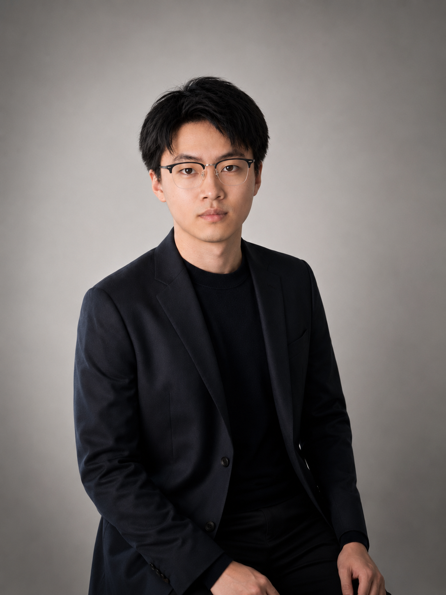

|
Changsheng Fang Ph.D.
Postdoctoral Research Associate
Medical Imaging and CT Reconstruction
Greater Boston, USA
Email: Chelsenfang@gmail.com
Google Scholar |
ORCID |
RedNote
|

|
Biography
Hi! I am currently a Postdoctoral Researcher at Rensselaer Polytechnic Institute (RPI) , working under the guidance of Prof. Ge Wang. My research focuses on inverse problems in medical imaging, with a focus on computed tomography (CT) reconstruction and generative modeling.
I received my Ph.D. in Computer Engineering from University of Massachusetts Lowell, under the supervision of Prof. Hengyong Yu.
My doctoral research focused on probabilistic generative modeling for incomplete CT reconstruction. I am deeply grateful to Prof. Yu for his invaluable guidance, support, and mentorship throughout all my Ph.D. journey.
During my Ph.D., I also worked as a Research Intern at Subtle Medical , where I explored the application of foundation models by leveraging foundation-model representations for brain MRI enhancement.
Previously, I obtained my M.S. in EIE from The Hong Kong Polytechnic University, under the supervision of Prof. Kenneth Lam. I also work closely with Prof. Kewen Xia at Hebei University of Technology.
Beyond research, I enjoy photography (and occasionally share my work on RedNote), playing badminton, and outdoor activities such as fishing, skiing, and climbing.
News
Selected Publications [Find full list at Google Scholar]
- WDK-Net: Lightweight Wavelet Diffusion with Kolmogorov–Arnold Network for Limited-angle Cardiac CT Reconstruction
Changsheng Fang, Bahareh Morovati, Shuo Han, Yu Shi, Li Zhou, Shuyi Fan, Dayang Wang, Hengyong Yu,
IEEE Transactions on Medical Imaging (IEEE-TMI), 2026
- Co-Retention feature pyramid network for low-dose CT denoising via spatial and frequency domain learning
Li Zhou, Bahareh Morovati, Dayang Wang, Yongshun Xu, Shuo Han, Shuyi Fan, Changsheng Fang, Yu Shi, Hengyong Yu,
Biomedical Signal Processing and Control (BSPC), 2026
- Cross-Distribution Diffusion Priors-Driven Iterative Reconstruction for Sparse-View CT
Haodong Li, Shuo Han, Haiyang Mao, Yu Shi, Changsheng Fang, Jianjia Zhang, Weiwen Wu, Hengyong Yu,
IEEE Transactions on Medical Imaging (IEEE-TMI), 2026
- Clinical Metadata Guided Limited-Angle CT Image Reconstruction
Yu Shi, Shuyi Fan, Changsheng Fang, Shuo Han, Haodong Li, Li Zhou, Bahareh Morovati, Dayang Wang, Hengyong Yu,
IEEE Transactions on Medical Imaging (IEEE-TMI), 2026
- CBCT-Pose: Few-Shot Viewpoint-Conditioned Diffusion for Sparse-View CBCT Reconstruction
Li Zhou, Changsheng Fang, Bahareh Morovati, Shuo Han, Shuyi Fan, Hengyong Yu,
2026 IEEE 23rd International Symposium on Biomedical Imaging (ISBI), 2026
- STABLE-PCCT: A Spectral Transformer Architecture with Bayesian Learning and Edge Preservation for Photon-Counting CT Image Reconstruction
Bahareh Morovati, Shuo Han, Changsheng Fang, Li Zhou, Dayang Wang, Shuyi Fan, Yu Shi, Hengyong Yu,
IEEE Transactions on Radiation and Plasma Medical Sciences (IEEE-TRPMS), 2026
- Accelerated Physics-Guided Diffusion Model for 3D Limited-Angle Reconstruction of Cardiac Computed Tomography
Shuo Han, Bahareh Morovati, Yongtong Liu, Changsheng Fang, Shuyi Fan, Li Zhou, Yu Shi, Ge Wang, Hengyong Yu,
IEEE Transactions on Radiation and Plasma Medical Sciences (IEEE-TRPMS), 2026
- ρ-NeRF: Leveraging Attenuation Priors in Neural Radiance Field for 3D Computed Tomography Reconstruction
Li Zhou, Changsheng Fang, Bahareh Morovati, Yongtong Liu, Shuo Han, Yongshun Xu, Hengyong Yu,
IEEE International Conference on Image Processing (ICIP), 2025
- ResPF: Residual Poisson Flow Generative Model for Efficient and Physically Consistent Sparse-View CT Reconstruction
Changsheng Fang, Yongtong Liu, Bahareh Morovati, Shuo Han, Yu Shi, Li Zhou, Shuyi Fan, Hengyong Yu,
IEEE Transactions on Radiation and Plasma Medical Sciences (IEEE-TRPMS), 2025
- Large Language Model Evaluated Stand-alone Attention-Assisted Graph Neural Network with Spatial and Structural Information Interaction for Precise Endoscopic Image Segmentation
Juntong Fan, Shuyi Fan, Debesh Jha, Changsheng Fang, Tieyong Zeng, Hengyong Yu, Dayang Wang,
arXiv preprint arXiv:2508.07028, 2025
- PoCGM: Poisson-Conditioned Generative Model for Sparse-View CT Reconstruction
Changsheng Fang, Yongtong Liu, Bahareh Morovati, Shuo Han, Li Zhou, Hengyong Yu,
The 18th International Meeting on Fully Three-Dimensional Image Reconstruction in Radiology and Nuclear Medicine (Fully3D), 2025
- A Hybrid Equilibrium Optimizer Algorithm and Its Optimization for LSTM
Ling Li, Yuqun Yang, Changsheng Fang, Kewen Xia,
16th International Conference on Advanced Computer Theory and Engineering (ICACTE), 2023
- Optimal Design of FIR Filter Based on Improved Artificial Bee Colony Algorithm
Changsheng Fang, Xiangwei Huang, Kewen Xia,
21st International Symposium on Distributed Computing and Applications for Business Engineering and Science (DCABES), 2022
Professional Services
- Journal Reviewer: IEEE-TMI, Biomedical Signal Processing and Control, Neuocomputing, Computerized Medical Imaging and Graphics, IEEE Access, Medical Physics, Journal of X-Ray Science and Technology, etc.
- Conference Reviewer: CVPR, AAAI, WACV, etc.